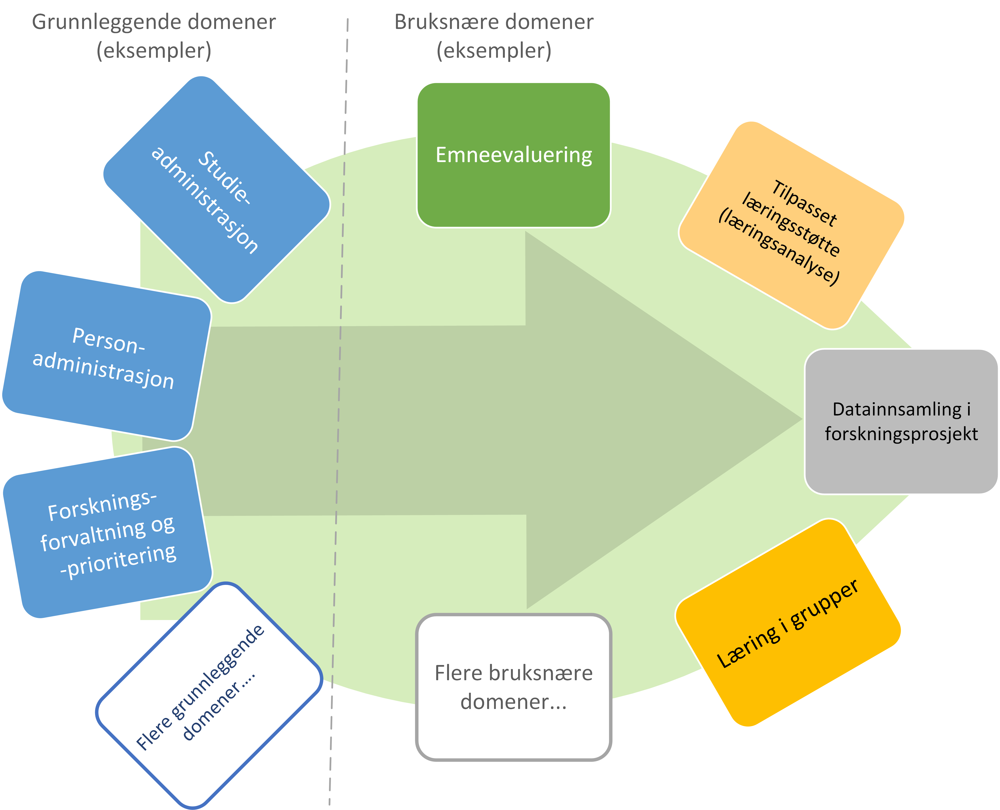

Sammendrag
1. Hva er en referansearkitektur?
Digitaliseringsdirektoratet sier at Referansearkitekturer gir veiledning til utforming av arkitekturer og løsninger, ut fra erfaring eller som målbilder. Valg av innhold avhenger av hva man vil oppnå og konteksten den skal brukes i. Referansearkitekturer kan være konkrete, slik som en veiledning for å sette sammen et møbel. Referansearkitekturer kan også være abstrakte, slik som Rammeverk for digital samhandling som veileder utforming av digitale tjenester. Begge varianter kan være svært nyttige, til hvert sitt bruk.

Figur 1 Spennet fra en konkret referansearkitektur for møbelbygging til en abstrakt referansearkitektur eksemplifisert med Rammeverk for digital samhandling fra Digitialiseringsdirektoratet
Referansearkitekturen for deling av data i høyere utdanning og forskning skal veilede helhetlig, operasjonell datadeling på en måte som støtter læring, forskning, innovasjon og administrasjon. For å oppnå denne målsetningen må den inneholde veiledende modeller som spenner fra det praktiske til det abstrakte. Referansearkitekturen inneholder modeller som støtter to hovedformål:
-
Etablere praktisk datadeling gjennom en teknisk datadelingsplattform som består av felleskomponenter, deres tjenester samt felles prosesser for deling av data
-
Skape informasjon av hensiktsmessig kvalitet slik at data som deles på plattformen har ønsket verdi
2. Forventet gevinst
Referansearkitekturen skisserer ønsket infrastruktur og beste praksis som øker oversikt og kontroll over data, samt forbedrer datakvalitet. Økt oversikt muliggjør reduksjon av kompleksitet og kostnad når unødvendige kopier av data og varianter av begreper fjernes. I tillegg vil oversikten gjøre det enkelt å finne relevante data for gjenbruk/viderebruk. Økt kontroll muliggjør bedre sikkerhet og personvern. Når brukerne får tilgang til forenklede og tilpassede datasett av høy kvalitet til sitt bruk, vil effektivitet, endringsdyktighet og innovasjon økes. Samhandling forbedres gjennom felles forståelse av data, tilgang til hverandres data og støtte for faglig kontekst kalt domener med tilhørende roller som har definert ansvar. I tillegg muliggjør datatilgang kunnskapsbaserte beslutninger.
3. Datadelingsplattformen
En ønsket datadelingsplattform er skissert i Figur 2. Figuren viser noen funksjoner som er realisert av felleskomponenter i midten, som skal benyttes av datatilbydere og datakonsumenter for å dele data.

Figur 2 Datadelingsplattform med felleskomponenter
Komponentene utfører publisering og gjenfinning av data som er distribuert hos mange datatilbydere gjennom en sentral ressursportal. Denne tilnærmingen sikrer både at konsumenter lett kan gjenfinne data fra alle tilbydere på ett sted samtidig som datatilbydere beholder råderett over hvem som får tilgang til sine data. Data blir forvaltet hos datatilbydere som kjenner betydningen av dem og kan sørge for tilgjengeliggjøring av oppdatert data rett fra kilden. Denne tilnærming fremmer gjenbruk av data slik at endringer kan skje raskt og effektivt kun ett sted, kun en gang. Denne tilnærmingen fremmer i tillegg datadeling på tvers av virksomheter på plattformen.
Disse komponenter tilbyr datadelingstjenester som benyttes i datadelingsprosesser. Den mest overordnede prosessen for datadeling i referansearkitekturen er spesifisert i verktøykassen for deling av data fra Digitaliseringsdirektoratet og er vist i Figur 4.

Figur 4 Verktøykassen for deling av data fra Digitaliseringsdirektoratet
Den røde ringen i Figur 4 viser de stegne hos datatilbyderen som omhandler arbeidet med å få oversikt over og tilgjengeliggjøre egne datasett, kalt «orden i eget hus». Dette arbeidet er støttet av arbeidet med informasjonsforvaltning, behandlet i neste seksjon.
4. Forvaltning av informasjon som deles på plattformen
For at datadeling skal gi verdi må data som deles ha tilstrekkelig kvalitet. Referansearkitekturen anbefaler at man organiserer og forvalter informasjonen i sektorene med basis i sektorenes behov.
Vi kan dele sektorens prosesser i to kategorier, som vist i Figur 5. Administrasjons- og støtteprosesser er forholdsvis stabile, og sektorene har et mål om å standardisere disse på tvers av sektorene. Lærings- og forskningsprosesser er mer dynamiske og ulike. Disse to typer prosesser trenger forskjellige typer data. De sentrale administrative prosesser benytter gjerne opplysninger om personer, studieemner eller forskningsprosjekt. Disse opplysningene må være tilgjengelig der den administrative prosessen kjøres, som kan gjerne være lokalt hos en institusjon. Lærings- og forskningsprosesser har ofte behov for delte dataressurser på tvers av institusjoner som for eksempel læringsobjekter eller forskningsresultater. [1]

Figur 5 Strategiske valg fra Handlingsplan for digitalisering i høyere utdanning og forskning
Referansearkitekturen foreslår at begge typer prosesser kan støttes av data i faglige kontekster vi kaller «domener», men på litt forskjellige måter. Et administrativt domene kan omfatte konteksten til en administrativ funksjon, som for eksempel studieadministrasjon. Domenen vil dekke denne funksjonen i alle institusjonene som bruker samme standard. Lærings- eller forskningsdomener vil omfatte den faglige konteksten knyttet til et spesifikt bruksområde. Eksempler kan være emnerelatert informasjon delt mellom studenter i samme emne eller forskningskontekst i et forskningsprosjekt.
Referansearkitekturen foreslår videre at domenene kan organiseres som vist i Figur 6. De administrative domenene har ansvar for basiskontekst relatert til utførelse av læring og forskning, og vi kaller derfor disse domenene «grunnleggende domener». Domener i lærings- og forskningskontekst kaller vi «brukernære domener». Informasjon i brukernære domener kommer fra den spesifikke brukskonteksten, men noe gjenbrukes også fra grunnleggende domener. [2]

Figur 6 Domener i UHF sektoren
Domenene vil ha behov for å forvalte prosesser, begreper og dersom det er hensiktsmessig, også data. Et domene som skal støtte læring i et emne for en gruppe studenter vil typisk ønske å forvalte informasjon om oppgaver som hører til emnet, hvilke læringsobjekter som kan være relevant og resultater knyttet til oppgavene. Administrative domener der flere institusjoner deltar kan velge å forvalte prosessdefinisjoner og begreper i domenet, mens tilhørende data kan forvaltes lokalt hos institusjonen. Referansearkitekturen foreslår bruk av følgende roller knyttet til domenene med forvaltningsansvar:
-
Behandlingsansvarlig er ansvarlig for å behandle personopplysninger på en lovlig, rettferdig og gjennomsiktig måte (definert av Datatilsynet)
-
Domeneansvarlig, med ansvar for aktiviteter og tiltak innen domenet for å sikre riktig kvalitet, utnytting og sikring av informasjon i domenet
-
Begrepsansvarlig, med det faglige ansvaret for et begreps innhold
Informasjonsforvaltning basert på domeneansvar forutsetter at sektorene blir enige om hvilke domener de skal forholde seg til og hvem som skal bekle rollene koblet til dem. Referansearkitekturen foreslår at koordinerende aktør (HKdir, Direktorat for høyere utdanning og kompetanse) fasiliterer en prosess for å beslutte dette i sektorene. Input til denne prosessen er pågående arbeid i sektorene innen organisasjonsevner (kapabiliteter)3 og funksjonsanalyse rettet mot arkiveringsbehov. Figur 7 viser et utdrag fra den Europeiske kapabilitetsmodellen EUNIS [3] som innspill til denne prosessen.

Figur 7 Forslag til informasjonsforvaltningsdomener fra EUNIS modellen
5. Økosystem for deling av data
Vi benytter både datadelingsplattformen og forvaltning av informasjon som skal deles på plattformen i en visjon om et økosystem for deling av data. Økosystemet består av aktører i domener som samhandler ved å tilby og konsumere data. Disse aktørene utfyller hverandre i funksjon, og samhandlingen skaper større verdi enn de enkelte aktører kan klare hver for seg. Studenter, undervisere, forskere og tjenestetilbydere med flere skal både skape, tilby, bearbeide og konsumere data på nye måter som gir alle insentiv og gevinst.
Figur 7 viser et økosystem for deling av data i og mellom domener. Funksjoner som er domenespesifikke, kalles her tjenesteprodukter. Dataprodukter tilgjengeliggjøres og deles mellom domenene i økosystemet. Domenene kan opptre som datatilbydere (tilbyr dataprodukt) og datakonsumenter (datakonsum).

Figur 7 Et økosystem for deling av data i UHF-sektorene